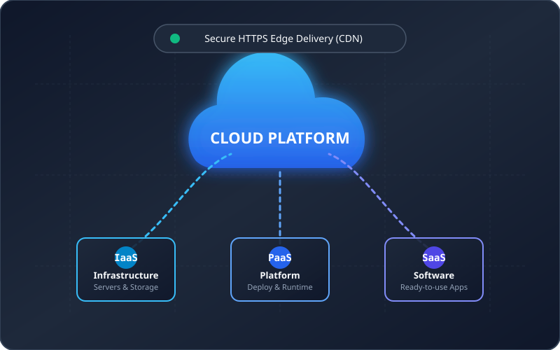

My First Cloud Website
Deploying a responsive static website to the public cloud with modern edge infrastructure and automated HTTPS security.

About Me
Cloud Computing
Cloud computing is a model in modern IT that delivers computing resources - such as servers, storage, databases, networking, and software - over the Internet on a pay-as-you-go pricing scheme. Instead of having to buy, setup, and run physical servers in their own data centers, companies and developers can quickly provision what they need from cloud service providers whenever necessary.
Based on the NIST definition, cloud computing has five key characteristics: on-demand self-service, broad network access through standard web protocols like HTTPS, resource pooling where shared infrastructure serves multiple clients, rapid elasticity to scale resources up or down according to current traffic, and measured service so customers only pay for what they actually use. This helps reduce upfront hardware investment (CapEx) and turn it into operational expenses (OpEx), making it easier to build and scale applications globally.
Cloud Services
IaaS - Infrastructure as a Service
Provides fundamental computing resources like virtual machines, storage, and networking over the internet. The cloud provider takes care of physical data centers and hardware, while the user manages operating systems, middleware, and applications.
PaaS - Platform as a Service
Provides a ready-to-use platform for developers to deploy and manage web applications without having to handle the underlying servers, operating systems, or runtime configurations.
SaaS - Software as a Service
Delivers complete software applications over the internet to end users via a web browser or app. Users do not need to install software locally or manage any infrastructure behind it.
Deployment Information
This static website is deployed to the public cloud using Option B specified in the Lab 01 assignment.
| Hosting Platform | GitHub Pages |
|---|---|
| Architecture Type | Static Website Hosting on Global Edge CDN |
| Source Repository | https://github.com/Bevil0301/cloud-lab1 |
| Deployment Branch | main branch • / (root) directory |
| Security Protocol | Active HTTPS • TLS Encrypted |
| Public Website URL | https://bevil0301.github.io/cloud-lab1/ |
| Verification Status | Accessible publicly without authentication across desktop & mobile clients |